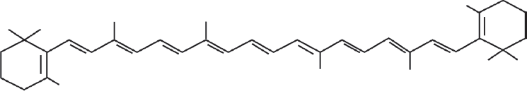
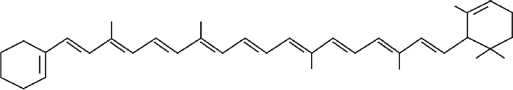
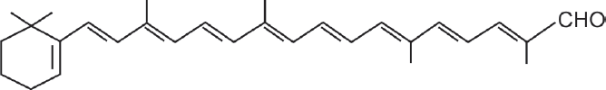

Em termos epidemiológicos, a ingestão inadequada de alimentos que são fonte de vitamina A é o principal fator etiológico de hipovitaminose A, causando lesões oculares (xeroftalmia) e cegueira, baixa resistência às infecções e esterilidade masculina. Este tem sido um problema de saúde em muitas áreas endêmicas no mundo, principalmente em populações carentes de países em desenvolvimento, como o Brasil. Cerca de 50% da ingestão média total de vitamina A na América do Sul provêm de fontes vegetais (provitamina A, carotenóides). A vitamina A, também conhecida como retinol, é um álcool primário, polietilênico e lipossolúvel, que apresenta grande capacidade reativa. O seu precursor comum, o fitoeno, é um hidrocarboneto de 40 carbonos, que é convertido em compostos mais insaturados α, β, γ e δ carotenos. A esse respeito, analise as figuras a seguir.
Figura 1 - beta caroteno
Figura 2 - alfa caroteno
Figura 3 - beta Apo 8’ carotenal
Com relação às estruturas acima, considere as seguintes afirmações:
Estão corretas as afirmações